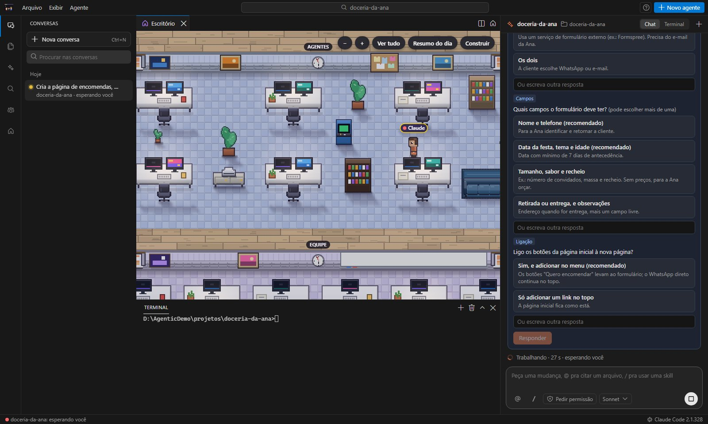
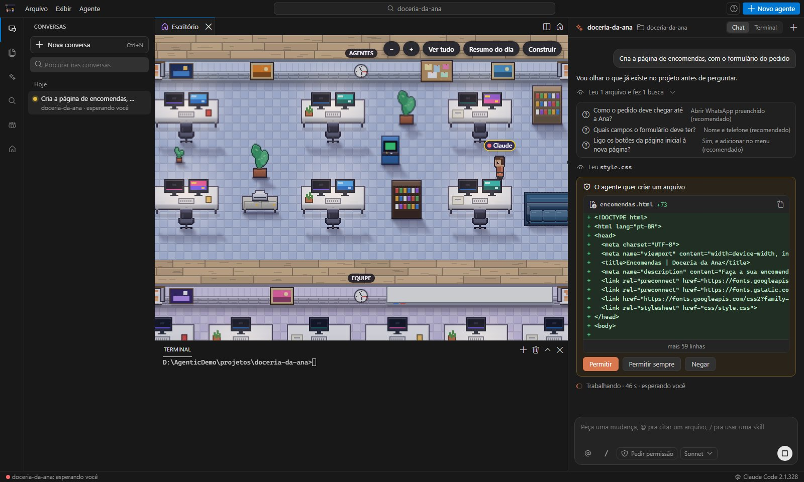
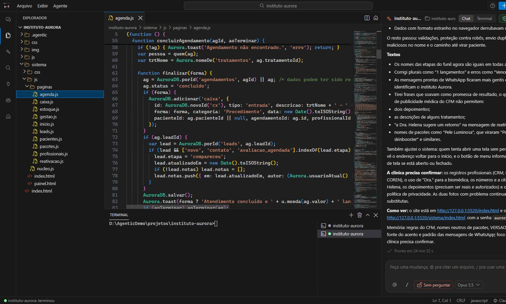
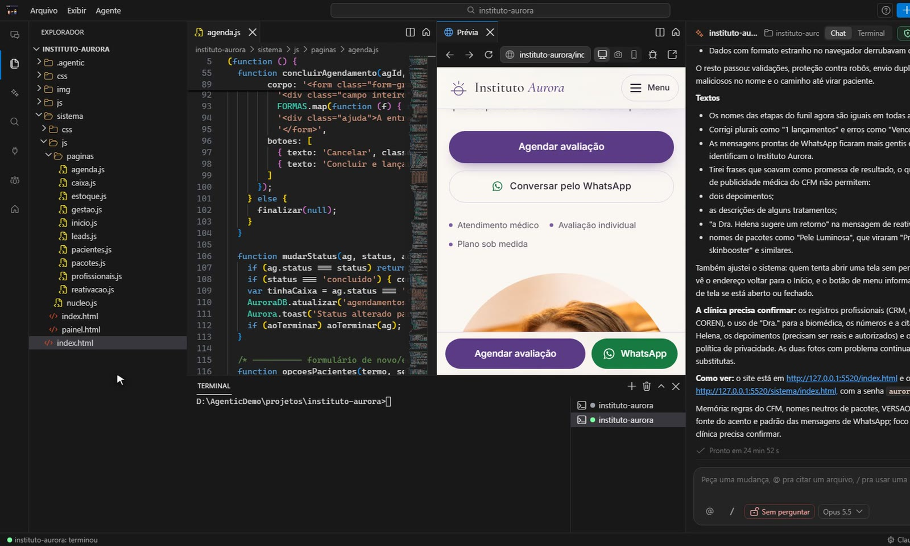
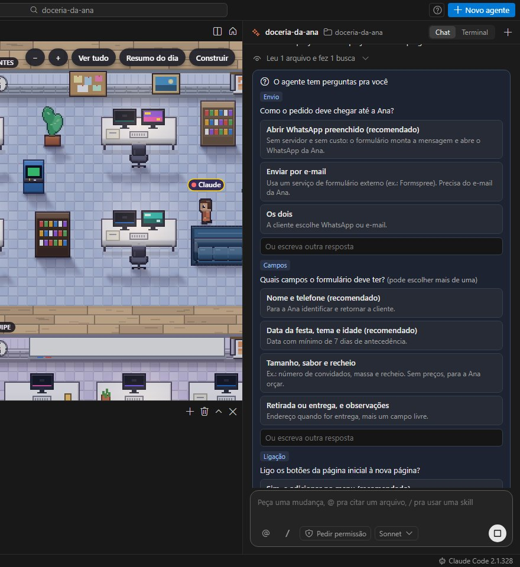
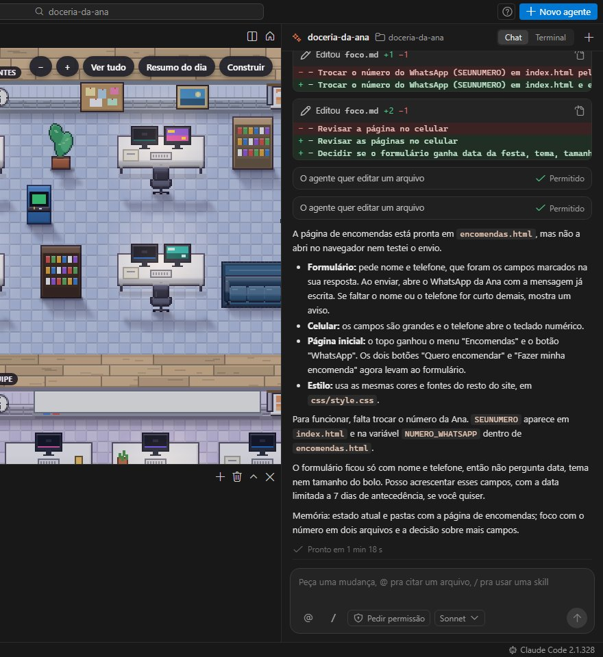
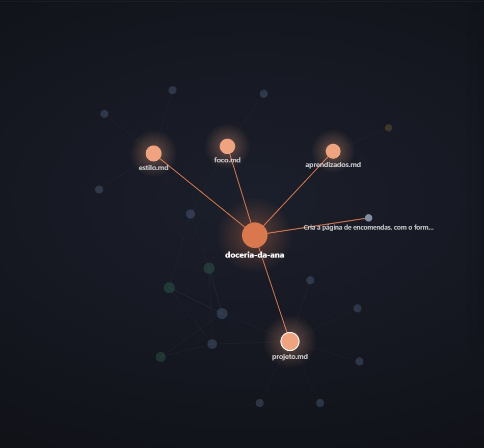
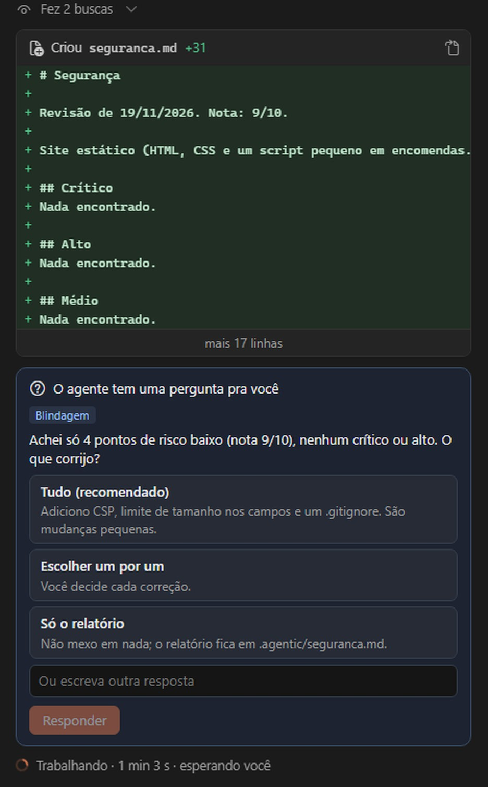

Descreva o site e o sistema. A sua equipe de IA constrói na sua frente.
O Agentic Code é uma IDE completa, com a IA no centro: você pede no chat, uma equipe de agentes escreve o código, e você vê o site e o sistema ganhando forma na prévia. E ele tem um cérebro, o Agentic OS, que lembra do projeto e aprende com você e te ajuda a economizar tokens.

O CHAT, O CÓDIGO E A SUA EQUIPE NUMA JANELAO Agentic Code inteiro, por dentro.
Seis minutos com o programa aberto, parte por parte: o chat, a IDE, a prévia, o escritório da equipe, o Agentic OS com a memória e as rotinas, o Blindar e o cérebro do projeto. E no fim, o site e o sistema de uma clínica funcionando dentro dele.
No vídeo: o Agentic Code por dentro, parte por parte, e o site e o sistema de uma clínica de harmonização facial como exemplo.
Uma IDE de verdade. Com a IA dentro.
O editor, o terminal, a prévia e o depurador de uma IDE como o VS Code, com o chat do Claude Code no meio. Você não troca de janela nunca.
O CHAT
Você pede, ele escreve. E você vê cada linha.
- O texto aparecendo enquanto ele escreve
- Cada edição com as linhas que entram e saem
- Permissão com botões: permitir, sempre ou negar
- Histórico de conversas por dia, pra voltar de onde parou
- Cite um arquivo com
@, troque o modelo e o esforço, pare na hora

O CÓDIGO
Quer pôr a mão no código? Ele está ali.
O mesmo editor do VS Code, com as ferramentas de linguagem ligadas no projeto inteiro: autocompletar, o erro sublinhado na hora e o pulo pra definição.
- Explorador, abas, pesquisa em todos os arquivos
- Terminal com várias abas, pra rodar o que precisar
- Autocompletar e erros em JavaScript e TypeScript
- MCP: ligue ferramentas ao Claude, ao Codex e ao Antigravity num painel

A PRÉVIA
O site aparece do lado do código, enquanto ele é feito.
O navegador fica dentro do programa. Quando o projeto liga um servidor, a prévia abre sozinha. Uma página .html abre pelo botão Prévia do próprio chat. E com um clique você vê como ela fica no celular.
- Computador, tablet e celular
- Abre sozinha quando o servidor liga
- Inspecionar: o console, os elementos e a rede da página, como o F12 do Chrome

E você vê a sua equipe de IA trabalhando
Cada agente tem um boneco num escritório em pixel art: escrevendo, lendo, pesquisando ou esperando você. Bate o olho e você sabe.
Um pedido, uma equipe ao mesmo tempo
"Revisa tudo, cada um numa parte" virou um time: um confere o site e o sistema no celular, outro testa se o formulário chega como lead, outro revisa os textos. Cada um na sua mesa, com a tarefa na etiqueta.
- Clicou num funcionário, abre o arquivo que ele está mexendo
- Ele junta as partes e confere se tudo funciona junto
A IA é brilhante. E começa toda conversa do zero.
Quem já criou alguma coisa com IA conhece a rotina.
Você explica o projeto de novo. E de novo.
Conversa nova, IA nova: ela não sabe o que é o projeto, pra quem é, quais as cores, qual o tom, o que você já decidiu.
Ela faz o que você disse, não o que você precisava.
Um pedido de uma linha vira uma suposição. O resultado sai genérico, e você gasta as próximas mensagens consertando.
Você corrige hoje. Amanhã, o mesmo erro.
A preferência que você explicou com tanto cuidado vale até a conversa acabar.
Você não vê o que está acontecendo.
Texto rolando num terminal. Quem mexe em qual arquivo, o que falta, se travou: você só descobre no fim.
O problema não é a IA. É tudo o que falta em volta dela.
Por isso o Agentic Code tem um cérebro: o Agentic OS.
Ele não troca a IA. Dá à mesma IA o que um bom profissional tem: memória, método, a capacidade de aprender com você e uma equipe pra dividir o trabalho.
Ele já começa sabendo.
O projeto, o público, o tom, as cores e as suas regras ficam na pasta .agentic do projeto e entram em toda conversa. Você explica uma vez.
Ele pensa antes de fazer.
Pediu algo novo? Ele lê o projeto, entende o pedido, sugere o que deixaria melhor e pergunta só o que muda o resultado, com as opções pra clicar.
Corrigiu uma vez, vale pra sempre.
"Nunca use roxo." "Preço sempre em R$ 0,00." Ele guarda sozinho, avisa o que guardou e segue a regra nas próximas conversas.
Pedido grande vira um time.
Ele divide o trabalho, chama sub-agentes que trabalham ao mesmo tempo, junta as partes e confere tudo no fim. Você vê cada um numa mesa.
Parece que gasta mais. Na prática, economiza.
Memória, perguntas e equipe parecem coisa a mais pra IA processar. Mas o que mais queima o seu limite não é isso: é a IA relendo o projeto a cada conversa e refazendo o que entendeu errado. O Agentic OS corta os dois, e o token vai pro trabalho.
Não relê o projeto toda vez.
Sem memória, cada conversa nova começa abrindo arquivo por arquivo pra entender o que já existe. Com ela, o resumo do projeto entra pronto, curto, e o agente vai direto ao pedido.
Não refaz o que entendeu errado.
Uma pergunta antes custa pouco. Um site inteiro no caminho errado custa o pedido de novo, e o conserto. Ele pergunta só o que muda o resultado.
A conversa principal não incha.
Cada sub-agente trabalha só com a parte dele e devolve o resumo. O agente principal não carrega cada arquivo de todo mundo, e a conversa longa continua leve.
Não repete o mesmo erro.
Corrigiu uma vez, a regra fica guardada. Você não gasta pedido explicando a mesma coisa de novo na semana seguinte.
Quanto economiza depende do projeto e do pedido. O que muda é pra onde o token vai: pro que você pediu, não pra IA se situar de novo.
Ele pensa, lembra e mostra o que sabe.
Telas reais do programa, num projeto de exemplo: o site da Doceria da Ana.
ENTENDE, SUGERE E PERGUNTA
Você pede uma frase. Ele volta com um plano melhor.
O pedido foi "cria a página de encomendas, com o formulário do pedido". Antes de escrever uma linha, ele olhou o projeto e perguntou o que ninguém tinha dito: como o pedido chega até a Ana, quais campos o formulário pede e se a página inicial ganha o botão.
- Ele lê o projeto antes de perguntar
- As sugestões vêm como opções pra clicar
- A recomendada primeiro, e espaço pra sua resposta
- Pedido pequeno ou "faz direto": ele faz na hora

MEMÓRIA QUE SE ATUALIZA SOZINHA
Terminou a tarefa? A memória já sabe.
No fim de cada tarefa, ele registra o que mudou e o que vem a seguir, e conta numa linha. Amanhã, a conversa nova começa exatamente daí. Projeto que já existe? Ele lê e monta a memória sozinho.
- Arquivos em português, dentro do projeto
- Você lê e edita quando quiser

O CÉREBRO DO PROJETO
Veja o que a sua IA sabe. Literalmente.
Um clique e o projeto vira um mapa, como no Obsidian: o projeto no centro, ligado à memória, a cada regra que você ensinou, às pastas, às páginas, ao código e às conversas, cada grupo numa cor. Clique num ponto e leia o que tem dentro, ou abra no editor.
- Cada arquivo, regra e conversa vira um ponto ligado ao projeto
- Filtre por grupo, procure, arraste e aproxime
- O "Animar" mostra o projeto crescendo, ponto a ponto

Oito rotinas que deixam o projeto em ordem.
Um botão. Um especialista em segurança lendo cada linha do seu projeto.
Site e sistema feitos com IA funcionam. A pergunta é se estão protegidos. O Blindar é um agente de cibersegurança que lê o código inteiro procurando por onde alguém entraria, e te mostra como fechar.
- MapeiaDescobre por onde o projeto recebe dados de fora: páginas, formulários, rotas, login, banco e chaves.
- VarreDivide o código entre sub-agentes, que procuram ao mesmo tempo: senha no código, banco aberto, login frágil, XSS, dependência com falha conhecida.
- RelataCada achado com o arquivo, a linha, o risco em uma frase e o conserto. E uma nota de 0 a 10 pro projeto.CríticoAltoMédioBaixo
- Blinda com vocêPergunta o que corrigir primeiro. Nada muda sem o seu ok, e o relatório fica na memória, em
seguranca.md.

Nenhuma ferramenta garante segurança total. O Blindar encontra o que dá pra encontrar lendo o código, explica em português simples e conserta com você. Ele só lê o seu projeto: nunca testa nada contra site ou servidor de outra pessoa.
A mesma IA. Outro nível de trabalho.
| O AGENTE SOZINHO | COM O AGENTIC CODE | |
|---|---|---|
| Contexto do projeto | Você explica a cada conversa, ou escreve e mantém um arquivo de instruções à mão | Memória montada e atualizada sozinha, em toda conversa |
| Pedido curto | Ele supõe o que faltou e sai fazendo | Ele sugere melhorias e pergunta o que muda o resultado |
| Suas correções | Valem até a conversa acabar | Viram regra do projeto, guardadas sozinhas |
| Onde você trabalha | Um terminal, e o editor e o navegador em outras janelas | Uma IDE só: chat, código, terminal, prévia e depurador |
| Ver o que está criando | Abrir o navegador e atualizar à mão | A prévia dentro do programa, que abre sozinha |
| Segurança | Uma revisão, quando você lembra de pedir | O Blindar: o projeto inteiro lido, com nota e conserto |
| Voltar amanhã | Achar a conversa e relembrar onde parou | Histórico por dia e o resumo de onde parou |
O agente sozinho: o Claude Code no terminal, sem configuração. O Agentic Code usa o seu próprio Claude Code, com a sua conta.
E os detalhes do dia a dia
Você vê onde ele mexe
O arquivo que o agente lê ou escreve ganha a marca dele.
O resumo do dia
Pedidos, tarefas prontas e arquivos mudados, num clique.
O Windows te chama
O agente precisa de você? Chega um aviso. Um clique e você está na conversa.
Claude Code, Codex e Antigravity
O Agentic OS completo no Claude Code. Os outros no terminal do programa.
Junto com o programa, quatro cursos
Do primeiro clique ao seu sistema no ar, protegido.
- 1
Instalar, ativar e usar
O Agentic Code de ponta a ponta.
- 2
Criar sites com o Agentic Code
Curso completo.
- 3
Criar sistemas, SaaS e aplicativos web
Curso completo.
- 4
Cibersegurança: proteger o seu site e o seu sistema
Curso completo.
O que você precisa
- 1Um PC com Windows 10 ou 11Não funciona no Mac nem no Linux.
- 2Pelo menos um agente instalado, com a sua contaO Claude Code com uma assinatura do Claude (pro Agentic OS completo), ou o Codex, ou o Antigravity.
- 3Internet pra ativarA ativação é no primeiro uso, com o e-mail da compra.
O Agentic Code não inclui nem substitui a assinatura do Claude, do Codex ou do Antigravity. Ele é o editor e o sistema onde o agente que você já tem trabalha.
O Agentic Code completo, com os cursos.
- O Agentic Code, a IDE com IA pra Windows
- O chat no estilo Claude Code desktop, com o histórico de conversas
- A prévia do site dentro do programa, no computador e no celular
- Editor com autocompletar, explorador, pesquisa, terminal e MCP
- Inspecionar: o depurador da página, dentro da prévia
- Claude Code, Codex e Antigravity num editor só
- O escritório dos agentes e a equipe de sub-agentes
- O cérebro, o Agentic OS: memória do projeto, método e aprendizado
- Ele sugere e pergunta antes de fazer
- A memória que se atualiza sozinha, e o mapa dela
- 8 rotinas prontas, como retomar, salvar e revisar
- O Blindar, o agente de cibersegurança do seu projeto
- Curso: instalar, ativar e usar
- Curso completo: Criar sites com o Agentic Code
- Curso completo: Criar sistemas, SaaS e aplicativos web
- Curso completo: Cibersegurança: proteger o seu site e o seu sistema
Depois da compra, você baixa pelo link com o e-mail da compra e os 4 últimos números do CPF, e ativa no primeiro uso.
Não gostou, devolvemos o seu dinheiro.
Perguntas
O Agentic Code é uma IDE, como o VS Code?
É. Tem o editor de código com autocompletar e erros, o explorador, a pesquisa, o terminal, a prévia com o depurador da página e os servidores MCP. A diferença é que o chat da IA e a equipe de agentes moram dentro dela. As extensões do VS Code não rodam nele.
Dá pra fazer sistema de verdade, não só site?
Dá. Sistema com login, cadastro, agenda, painel e banco de dados, SaaS e aplicativo web. No vídeo, o mesmo pedido fez o site da clínica e o sistema de gestão dela, ligados. O curso de sistemas ensina do primeiro pedido até colocar no ar.
O que é o Agentic OS?
É o cérebro do Agentic Code, e trabalha junto com o Claude Code: a memória de cada projeto (na pasta .agentic), o método de sugerir e perguntar antes de fazer, o aprendizado com as suas correções, as rotinas prontas, o Blindar e a equipe de sub-agentes.
Ele vai ficar me perguntando tudo?
Não. Ele pergunta quando o pedido é criar algo novo ou tem mais de um jeito de fazer, uma rodada só. Pergunta simples, mudança pequena ou "faz direto": ele faz na hora. E dá pra desligar no painel do Agentic OS.
A memória gasta mais do meu plano?
Ela entra no começo de cada conversa: alguns arquivos de texto do projeto. Em troca, você não explica o projeto de novo e ele erra e refaz menos.
Preciso ter o Claude Code, o Codex ou o Antigravity?
Sim. Pelo menos um deles, instalado e com a sua conta. O Agentic OS completo (memória, perguntas, skills e equipe) funciona com o Claude Code. O Codex e o Antigravity rodam no terminal do programa, com o boneco deles no escritório.
Preciso escrever código?
Não precisa escrever o código você mesmo: você descreve e o agente escreve. Se quiser mexer, o editor está ali.
Como recebo depois da compra?
Você baixa pelo link com o e-mail da compra e os 4 últimos números do CPF. Instala, abre e ativa no primeiro uso.
Posso usar em mais de um computador?
A sua cópia é pessoal, ligada à sua licença e ao seu computador.
O acesso é pra sempre?
Não. É uma licença de 1 ano, com todas as atualizações. Depois, é só renovar.
Os meus projetos saem do meu computador?
O Agentic Code e a memória ficam no seu computador. O que vai pra fora é o que o próprio agente já manda pra IA, como sempre mandou, agora com o resumo do projeto junto.
O Blindar garante que o meu site não vai ser invadido?
Não, e ninguém pode garantir isso. Ele lê o projeto inteiro procurando as falhas mais comuns e as mais graves, explica cada uma e conserta com você. É o que um bom especialista faria olhando o código.
E se eu não gostar?
7 dias de garantia. Devolvemos o seu dinheiro.
Você traz a ideia. O Agentic Code constrói com você.
Descreva o site, o sistema ou o app. Responda duas perguntas. E veja a sua equipe de IA construir, na sua IDE.